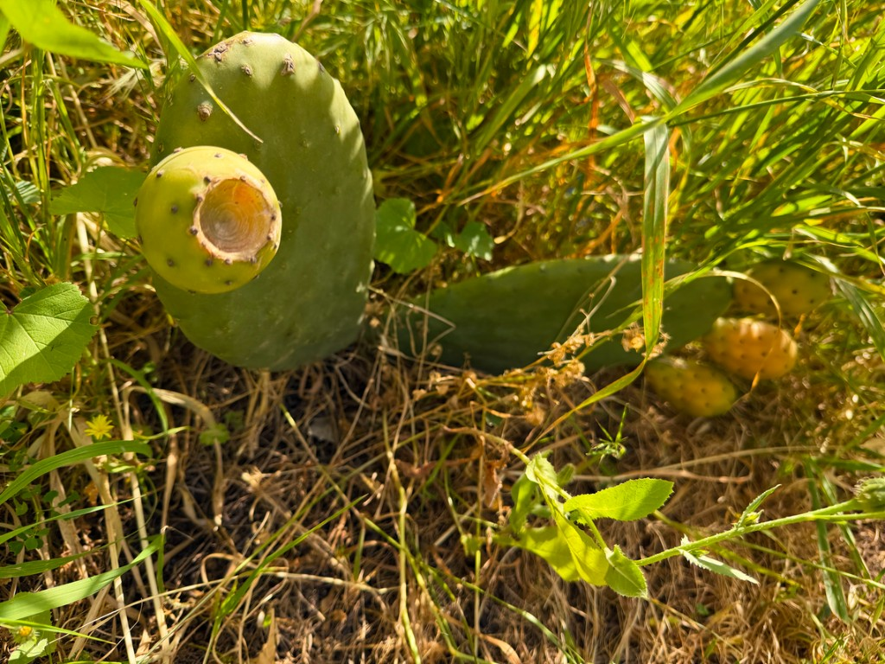

Раздел в разработке.
Съедобные кактусы — это прежде всего виды, у которых употребляют плоды и/или молодые побеги (при правильной подготовке).
Я живу в Израиле, и здесь действительно много кактусов растёт и продаётся в частных садах и на рынках. Благодаря этому можно увидеть, какие виды чаще всего используют в быту, и как они выглядят в “правильный” сезон — когда плод зрелый, а побег мягкий.
Упомянутые “плоды/сегменты Dab” обычно собирают не сразу, а после созревания — когда мякоть более приятная на вкус и проще отделяется. Но главное правило всегда одно: съедобность начинается с точного определения вида. Внешне похожие кактусы могут сильно отличаться по составу и переносимости.
Важно: съедобность зависит от точного определения вида. У колючих растений внешнее сходство может быть обманчивым, а у некоторых видов сок или химический состав может быть неприятным или небезопасным.
На этой странице в будущем появятся “карточки” с примерами, сезонностью и способом подготовки. А пока — базовая логика:
- Опунция (Opuntia): чаще всего используют плоды и “нопаль” — молодые сегменты/побеги. Перед готовкой обязательно уберите все колючки и “волоски” (включая мелкие), работайте аккуратно (лучше в перчатках), затем тщательно промойте.
- Питахайя (плоды ночных кактусов): обычно ценят за вкус и свежесть, употребляют в виде мякоти.
- Семена некоторых видов: могут использоваться в блюдах после обработки (по источникам конкретного растения).
Важно по безопасности: даже если вид “съедобный”, не используйте растение, если оно могло быть обработано химикатами (пестициды, гербициды) или вы не уверены в происхождении. Если дома вы брызгали растение химией — для еды оно не подходит. Всегда ориентируйтесь на то, что безопасно именно по источнику и по условиям выращивания.
Если будете готовить впервые, начните с простых шагов: аккуратно удалите колючки/волокна, хорошо промойте, затем термически обработайте побеги (если так рекомендуют для конкретного вида). И не берите растения “наугад”.
На главную